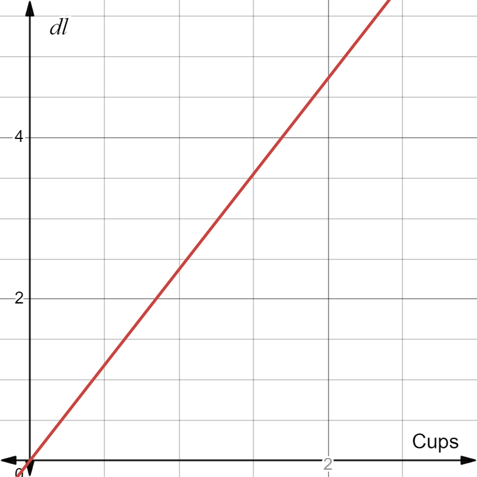
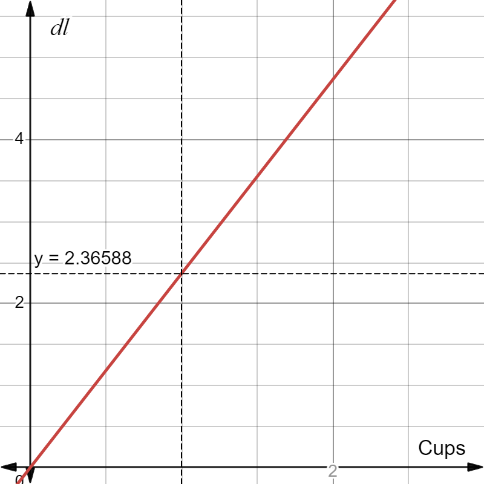
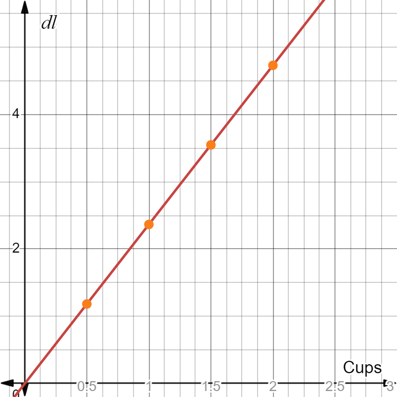
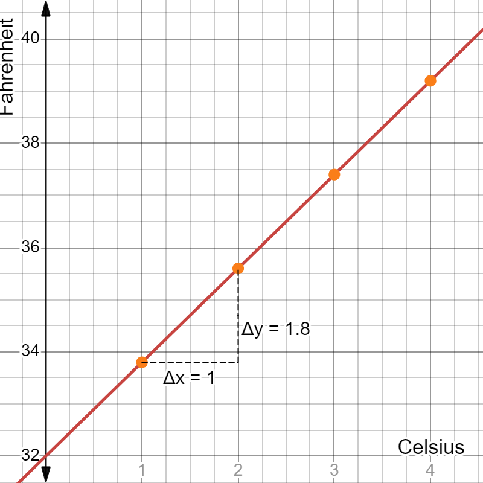

// One-time (non-reactive) global listener: on mobile, rotating the
// screen fires "orientationchange" while iOS Safari is still mid-way
// through animating the address bar/viewport, so reveal.js's own
// resize handler picks up transitional (wrong) dimensions and mis-
// scales the slide -- which is what made every interactive figure
// disappear until a full reload. Re-running reveal.js's own layout
// pass a moment after rotation, once the viewport has settled, fixes
// this without touching any figure's own code.
orientationRelayout = {
window.addEventListener("orientationchange", () => {
setTimeout(() => {
if (typeof Reveal !== "undefined" && Reveal.layout) Reveal.layout();
}, 400);
});
return null;
}Methods in Political Science
Regression Analysis
Sirus Dehdari
Department of Political Science, Stockholm University
Why regression analysis?
- We are often interested in examining relationships between different variables
- Are unemployed citizens more likely to support radical right parties?
- Is there less corruption in democratic countries?
- Is there a relationship between income and voter turnout?
- In generic form: is there a relationship between the variable \(X\) and the variable \(Y\)?
This week we will learn the following
- Understand how regression analysis can help us examine these types of relationships
- In particular:
- Is the relationship positive or negative (or is there no relationship at all)?
- How strong is the relationship?
- Is it really a statistically significant relationship?
- How much of the variation in \(Y\) can be explained by \(X\)?
- Chapter 5.1 in Österman and Folke
- Next week: what happens when we “control” for more variables (multiple regression analysis)
Today’s lecture
- Linear relationships
- Regression line
- Model fit
- Statistical significance (inference)
- Interpreting regression results
Indoor temperature (again!)
- We’re back at the Ministry of Rural Affairs and Infrastructure
- Now we want to understand why some households have lower indoor temperature compared to other households
- Someone at the ministry suggests there’s a relationship between income and indoor temperature
- Assume there is a linear relationship between these two variables
- Usually the simplest way to describe a relationship between two variables is as a linear relationship
Converting from one unit to another
- What is a linear relationship?
- Suppose we find a recipe where the measurements are given in cups, but we’re used to ml and dl
- There’s a relationship between cups and, say, dl:
\[deciliter = 2.366 \times cups\]
- The recipe says the oven should be at a certain temperature, given in Celsius, but you’re used to Fahrenheit:
\[Fahrenheit = 32 + 1.8 \times Celsius\]
Example: Cups to deciliters

Example: Cups to deciliters

Example: Cups to deciliters

Linear relationship
- For every value on the \(x\)-axis (cups) we get a value on the \(y\)-axis
- Example: When \(cups = 1\), \(deciliter = 2.36588\); when \(cups = 2\), \(deciliter = 4.73176\)
- When \(cups = 0\), \(deciliter = 0\) (of course)
- However, \(x = 0\) doesn’t have to give \(y = 0\) for other relationships
Celsius to Fahrenheit

Celsius to Fahrenheit

Linear equation
- A linear relationship can be described with a linear equation:
\[y = kx + m\]
- The slope of the line is given by \(k\), while \(m\) is the constant
- Cups to deciliters: \(m = 0\) and \(k= 2.36588\)
- Celsius to Fahrenheit, \(m=32\) and \(k= 1.8\)
Linear equation
- In statistics a modified version is used
\[y = a + bx\]
- The slope, also called the slope coefficient, is given by \(b\), while \(a\) is the constant
- We call \(y\) the dependent variable, while \(x\) is called the independent variable
- If \(b\) is greater than zero, the relationship is positive
- If \(b\) is less than zero, the relationship is negative
- If \(b\) equals zero, there is no relationship
Positive, negative, or no relationship
// One-time (non-reactive) global fix: reveal.js's math plugin only ever
// queues a MathJax typeset for the slide area itself (and the current
// slide again on slidechanged) -- it never touches the reveal-menu
// plugin's slide-index side panel, which lives outside that scope. So
// any math in a slide title (e.g. \(\mu\)) showed up in the menu as
// raw, un-typeset LaTeX source instead of the rendered symbol. This
// polls briefly for the menu panel (and for MathJax itself, which
// reveal.js's math plugin loads lazily) and typesets it once, the same
// way reveal.js typesets the slides.
menuMathFix = {
function tryTypeset() {
const menu = document.querySelector(".slide-menu");
if (!menu || typeof MathJax === "undefined" || !MathJax.Hub) return false;
MathJax.Hub.Queue(["Typeset", MathJax.Hub, menu]);
return true;
}
if (!tryTypeset()) {
let attempts = 0;
const interval = setInterval(() => {
attempts++;
if (tryTypeset() || attempts >= 30) clearInterval(interval);
}, 300);
}
return null;
}html`<div class="rel-buttons-wrap">
<div class="rel-buttons-title">Relationship</div>
<div class="sd-buttons">
${Inputs.button("Positive", { value: null, reduce: () => { mutable relType = "pos"; return null; } })}
${Inputs.button("Negative", { value: null, reduce: () => { mutable relType = "neg"; return null; } })}
${Inputs.button("None", { value: null, reduce: () => { mutable relType = "none"; return null; } })}
</div>
</div>`function relLineFn(type, x) {
if (type === "pos") return 2 + 0.5 * x;
if (type === "neg") return 2 - 0.5 * x;
return 2;
}
function relColor(type) {
return type === "pos" ? "#2563eb" : type === "neg" ? "#dc2626" : "#6b7280";
}
function relEquation(type) {
if (type === "pos") return "Y = 2 + 0.5X";
if (type === "neg") return "Y = 2 − 0.5X";
return "Y = 2";
}// Built fresh from scratch whenever relType changes (cheap -- no
// animation to preserve across redraws, unlike the CLT/pizza figures
// elsewhere in this deck), so hover/tap handlers below are always
// closures over the *current* relType and line.
relSvg = {
const svg = d3.create("svg")
.attr("viewBox", `0 0 ${relWidth} ${relHeight}`)
.attr("width", relWidth)
.attr("height", relHeight)
.attr("class", "rel-svg")
.style("touch-action", "none");
const xAxisY = relYScale(0);
const yAxisX = relXScale(0);
const gridG = svg.append("g");
for (const gx of relXTicks) {
gridG.append("line")
.attr("x1", relXScale(gx)).attr("x2", relXScale(gx))
.attr("y1", relMarginTop).attr("y2", relHeight - relMarginBottom)
.attr("stroke", "#e5e5e5").attr("stroke-width", 1);
}
for (const gy of relYTicks) {
gridG.append("line")
.attr("x1", relMarginLeft).attr("x2", relWidth - relMarginRight)
.attr("y1", relYScale(gy)).attr("y2", relYScale(gy))
.attr("stroke", "#e5e5e5").attr("stroke-width", 1);
}
svg.append("line")
.attr("x1", relXScale(relXDomain[0])).attr("x2", relXScale(relXDomain[1]))
.attr("y1", xAxisY).attr("y2", xAxisY)
.attr("stroke", "#333").attr("stroke-width", 2);
svg.append("line")
.attr("x1", yAxisX).attr("x2", yAxisX)
.attr("y1", relYScale(relYDomain[0])).attr("y2", relYScale(relYDomain[1]))
.attr("stroke", "#333").attr("stroke-width", 2);
const xTipX = relXScale(relXDomain[1]);
svg.append("path")
.attr("d", `M ${xTipX} ${xAxisY} L ${xTipX - 9} ${xAxisY - 5} L ${xTipX - 9} ${xAxisY + 5} Z`)
.attr("fill", "#333");
const yTipY = relYScale(relYDomain[1]);
svg.append("path")
.attr("d", `M ${yAxisX} ${yTipY} L ${yAxisX - 5} ${yTipY + 9} L ${yAxisX + 5} ${yTipY + 9} Z`)
.attr("fill", "#333");
svg.append("text")
.attr("x", xTipX).attr("y", xAxisY + 22)
.attr("text-anchor", "end").attr("font-size", 18).attr("font-weight", "bold")
.attr("fill", "#333").text("X");
svg.append("text")
.attr("x", yAxisX - 10).attr("y", yTipY + 4)
.attr("text-anchor", "end").attr("font-size", 18).attr("font-weight", "bold")
.attr("fill", "#333").text("Y");
// Numeric tick marks/labels along both axes. The x=0 label is
// skipped here since the y-axis tick loop already draws a single
// "0" right at the origin -- drawing it twice would just overlap.
const tickG = svg.append("g");
for (const gx of relXTicks) {
if (gx === 0) continue;
const px = relXScale(gx);
tickG.append("line")
.attr("x1", px).attr("x2", px)
.attr("y1", xAxisY).attr("y2", xAxisY + 5)
.attr("stroke", "#333").attr("stroke-width", 1);
tickG.append("text")
.attr("x", px).attr("y", xAxisY + 19)
.attr("text-anchor", "middle").attr("font-size", 13)
.attr("fill", "#555").text(svFmt(gx));
}
for (const gy of relYTicks) {
const py = relYScale(gy);
tickG.append("line")
.attr("x1", yAxisX - 5).attr("x2", yAxisX)
.attr("y1", py).attr("y2", py)
.attr("stroke", "#333").attr("stroke-width", 1);
// The origin's "0" sits diagonally down-left of the axis crossing
// instead of directly left, so it doesn't crowd either axis line.
if (gy === 0) {
tickG.append("text")
.attr("x", yAxisX - 10).attr("y", py + 16)
.attr("text-anchor", "end").attr("font-size", 13)
.attr("fill", "#555").text(svFmt(gy));
} else {
tickG.append("text")
.attr("x", yAxisX - 9).attr("y", py + 4)
.attr("text-anchor", "end").attr("font-size", 13)
.attr("fill", "#555").text(svFmt(gy));
}
}
if (relType) {
const x0 = relXDomain[0], x1 = relXDomain[1];
const y0 = relLineFn(relType, x0), y1 = relLineFn(relType, x1);
svg.append("line")
.attr("x1", relXScale(x0)).attr("y1", relYScale(y0))
.attr("x2", relXScale(x1)).attr("y2", relYScale(y1))
.attr("stroke", relColor(relType)).attr("stroke-width", 3);
const hoverG = svg.append("g").attr("display", "none");
// Dashed projection lines out to each axis, drawn first so the
// dot/glow/text sit visually on top of them.
const hoverGuideY = hoverG.append("line")
.attr("stroke", relColor(relType)).attr("stroke-opacity", 0.55)
.attr("stroke-width", 1).attr("stroke-dasharray", "4,3");
const hoverGuideX = hoverG.append("line")
.attr("stroke", relColor(relType)).attr("stroke-opacity", 0.55)
.attr("stroke-width", 1).attr("stroke-dasharray", "4,3");
hoverG.append("circle").attr("class", "rel-hover-glow").attr("r", 9)
.attr("fill", relColor(relType)).attr("fill-opacity", 0.25);
hoverG.append("circle").attr("class", "rel-hover-dot").attr("r", 4)
.attr("fill", relColor(relType));
const hoverText = hoverG.append("text")
.attr("text-anchor", "middle")
.attr("font-size", 14)
.attr("fill", relColor(relType));
function showHover(x, y) {
const px = relXScale(x), py = relYScale(y);
hoverG.attr("display", null);
// Out to the y-axis (horizontal) and down to the x-axis (vertical).
hoverGuideY.attr("x1", px).attr("y1", py).attr("x2", yAxisX).attr("y2", py);
hoverGuideX.attr("x1", px).attr("y1", py).attr("x2", px).attr("y2", xAxisY);
hoverG.select(".rel-hover-glow").attr("cx", px).attr("cy", py);
hoverG.select(".rel-hover-dot").attr("cx", px).attr("cy", py);
hoverText.attr("x", px).attr("y", py - 14).text(`X = ${svFmt(x)}, Y = ${svFmt(y)}`);
}
function hideHover() {
hoverG.attr("display", "none");
}
// Snap-candidates are the line's own points at each relGridStep
// x-step (the same spacing as the background grid). Pixel radius is
// derived from the actual on-screen spacing between them, kept
// just under half a step, so neighbouring points never fight over
// the same pointer position.
const pixelStep = Math.abs(relXScale(relGridStep) - relXScale(0));
const mouseRadius = pixelStep * 0.45;
const touchRadius = pixelStep * 0.48;
function nearestCandidate(mx, my) {
let best = null, bestDist = Infinity;
for (const gx of relXTicks) {
const gy = relLineFn(relType, gx);
const px = relXScale(gx), py = relYScale(gy);
const d = Math.hypot(px - mx, py - my);
if (d < bestDist) { bestDist = d; best = { x: gx, y: gy, dist: d }; }
}
return best;
}
const overlay = svg.append("rect")
.attr("x", relMarginLeft).attr("y", relMarginTop)
.attr("width", relWidth - relMarginLeft - relMarginRight)
.attr("height", relHeight - relMarginTop - relMarginBottom)
.attr("fill", "transparent")
.style("cursor", "pointer");
// Mouse/pen: continuous hover as the pointer moves.
overlay.on("pointermove", (event) => {
if (event.pointerType === "touch") return;
const [mx, my] = d3.pointer(event);
const cand = nearestCandidate(mx, my);
if (cand && cand.dist <= mouseRadius) showHover(cand.x, cand.y);
else hideHover();
});
overlay.on("pointerleave", () => hideHover());
// Touch (and mouse, harmlessly): tap to show, tap elsewhere to hide.
overlay.on("click", (event) => {
const [mx, my] = d3.pointer(event);
const cand = nearestCandidate(mx, my);
if (cand && cand.dist <= touchRadius) showHover(cand.x, cand.y);
else hideHover();
});
}
return svg.node();
}Linear equation
- So far we’ve seen examples of an exact linear relationship
- The dots represent our data: all dots lie on the line
- Relationships are rarely exact, though; usually they are inexact
- This can be because we can’t always make exact measurements
- More likely, though, is that we’re studying complex relationships
Income and indoor temperature
- Back to our scenario: we want to understand what determines which indoor temperature households choose to have
- Those with higher income are more likely to be able to afford higher electricity costs
- Reasonable to assume a positive relationship between income and indoor temperature
- But we shouldn’t assume the relationship is exact, since households’ indoor temperature is also affected by other factors
Example: temperature data
- Suppose we have a random sample of 15 households
| Household ID | Indoor temperature | Monthly income (in thousands of SEK) |
|---|---|---|
| 1 | 18.3 | 13.4 |
| 2 | 19.5 | 13.6 |
| 3 | 20.5 | 26.9 |
| 4 | 20.8 | 33.5 |
| 5 | 18.5 | 14.4 |
| 6 | 20.4 | 44.0 |
| 7 | 17.2 | 20.3 |
| 8 | 15.9 | 16.6 |
| 9 | 22.3 | 28.8 |
| 10 | 16.6 | 35.0 |
| 11 | 21.6 | 28.9 |
| 12 | 25.4 | 42.3 |
| 13 | 19.7 | 27.8 |
| 14 | 23.5 | 24.7 |
| 15 | 18.0 | 29.2 |
Is there a linear relationship?
- It looks like those with higher income also have higher indoor temperature
- However, it’s probably not an exact linear relationship
- We need a modified equation to account for the relationship not being exact:
\[Y_i = a + b X_i + e_i\]
- The parameters \(a\) and \(b\) represent the constant (intercept) and the slope coefficient, just as in the previous equation
- The error term \(e_i\) compensates for the fact that the observations deviate from the straight line
Explore the data: temperature and income
// One-time (non-reactive, no dependencies -- runs exactly once) global
// listener: clicking anywhere that isn't a data point or a Data-tab
// table row closes the currently open info box and returns to plain
// hover mode.
hhClickAwayListener = {
document.addEventListener("click", (event) => {
if (event.target.closest(".hh-dot, .hh-hit, .hh-row")) return;
mutable selectedHH = null;
});
return null;
}hhData = [
{id: 1, temp: 18.3, income: 13.4},
{id: 2, temp: 19.5, income: 13.6},
{id: 3, temp: 20.5, income: 26.9},
{id: 4, temp: 20.8, income: 33.5},
{id: 5, temp: 18.5, income: 14.4},
{id: 6, temp: 20.4, income: 44.0},
{id: 7, temp: 17.2, income: 20.3},
{id: 8, temp: 15.9, income: 16.6},
{id: 9, temp: 22.3, income: 28.8},
{id: 10, temp: 16.6, income: 35.0},
{id: 11, temp: 21.6, income: 28.9},
{id: 12, temp: 25.4, income: 42.3},
{id: 13, temp: 19.7, income: 27.8},
{id: 14, temp: 23.5, income: 24.7},
{id: 15, temp: 18.0, income: 29.2}
]// Rebuilt whenever selectedHH or showRegLine changes (click on a dot,
// a jump from the Data tab's table, or the regression-line button) --
// cheap with only 15 points, so no need for the imperative-DOM-patching
// approach used on continuous-hover figures elsewhere in this deck.
hhSvg = {
const svg = d3.create("svg")
.attr("viewBox", `0 0 ${hhWidth} ${hhHeight}`)
.attr("width", hhWidth)
.attr("height", hhHeight)
.attr("class", "hh-svg")
.style("touch-action", "none");
const xAxisY = hhYScale(hhYDomain[0]);
const yAxisX = hhXScale(hhXDomain[0]);
const gridG = svg.append("g");
for (const gx of hhXTicks) {
gridG.append("line")
.attr("x1", hhXScale(gx)).attr("x2", hhXScale(gx))
.attr("y1", hhMarginTop).attr("y2", xAxisY)
.attr("stroke", "#e5e5e5").attr("stroke-width", 1);
}
for (const gy of hhYTicks) {
gridG.append("line")
.attr("x1", yAxisX).attr("x2", hhWidth - hhMarginRight)
.attr("y1", hhYScale(gy)).attr("y2", hhYScale(gy))
.attr("stroke", "#e5e5e5").attr("stroke-width", 1);
}
svg.append("line")
.attr("x1", yAxisX).attr("x2", hhWidth - hhMarginRight)
.attr("y1", xAxisY).attr("y2", xAxisY)
.attr("stroke", "#333").attr("stroke-width", 2);
svg.append("line")
.attr("x1", yAxisX).attr("x2", yAxisX)
.attr("y1", hhMarginTop).attr("y2", xAxisY)
.attr("stroke", "#333").attr("stroke-width", 2);
// Tick marks every hhXStep/hhYStep, but numeric labels only every
// hhXLabelStep/hhYLabelStep -- so the grid is finer than what's
// actually labelled.
const tickG = svg.append("g");
for (const gx of hhXTicks) {
tickG.append("line")
.attr("x1", hhXScale(gx)).attr("x2", hhXScale(gx))
.attr("y1", xAxisY).attr("y2", xAxisY + 5)
.attr("stroke", "#333").attr("stroke-width", 1);
if (Math.round(gx) % hhXLabelStep === 0) {
tickG.append("text")
.attr("x", hhXScale(gx)).attr("y", xAxisY + 19)
.attr("text-anchor", "middle").attr("font-size", 14)
.attr("fill", "#555").text(String(gx));
}
}
for (const gy of hhYTicks) {
tickG.append("line")
.attr("x1", yAxisX - 5).attr("x2", yAxisX)
.attr("y1", hhYScale(gy)).attr("y2", hhYScale(gy))
.attr("stroke", "#333").attr("stroke-width", 1);
if (Math.round(gy) % hhYLabelStep === 0) {
tickG.append("text")
.attr("x", yAxisX - 10).attr("y", hhYScale(gy) + 5)
.attr("text-anchor", "end").attr("font-size", 14)
.attr("fill", "#555").text(String(gy));
}
}
// "Income" sits near the right end of the x-axis (anchor="end" so
// it ends just inside the right edge instead of overflowing past
// it). "Temperature" sits near the top of the y-axis, close to the
// "25" tick -- rotate(-90) around a point near the top plus
// anchor="end" makes the text extend *downward* from that point
// (not upward off the top edge of the figure).
svg.append("text")
.attr("x", hhWidth - hhMarginRight - 4)
.attr("y", xAxisY - 6)
.attr("text-anchor", "end").attr("font-size", 16).attr("font-weight", "bold")
.attr("fill", "#333").text("Income");
const yLabelAnchorY = hhMarginTop + 10;
svg.append("text")
.attr("x", yAxisX + 18).attr("y", yLabelAnchorY)
.attr("transform", `rotate(-90, ${yAxisX + 18}, ${yLabelAnchorY})`)
.attr("text-anchor", "end").attr("font-size", 16).attr("font-weight", "bold")
.attr("fill", "#333").text("Temperature");
// Regression line drawn before the dots (not after), so the data
// points always sit visually on top of it.
if (showRegLine) {
const rx0 = hhXDomain[0], rx1 = hhXDomain[1];
const ry0 = 16.43 + 0.13 * rx0, ry1 = 16.43 + 0.13 * rx1;
svg.append("line")
.attr("x1", hhXScale(rx0)).attr("y1", hhYScale(ry0))
.attr("x2", hhXScale(rx1)).attr("y2", hhYScale(ry1))
.attr("stroke", "#16a34a").attr("stroke-width", 2.5);
}
const dotsG = svg.append("g");
const infoG = svg.append("g");
function renderInfoBox(id) {
infoG.selectAll("*").remove();
const d = hhData.find(h => h.id === id);
if (!d) return;
const px = hhXScale(d.income), py = hhYScale(d.temp);
const boxW = 128, boxH = 58;
let bx = px + 10, by = py - boxH - 8;
if (bx + boxW > hhWidth - 2) bx = px - boxW - 10;
if (by < 2) by = py + 10;
infoG.append("rect")
.attr("x", bx).attr("y", by).attr("width", boxW).attr("height", boxH)
.attr("rx", 6).attr("fill", "white").attr("fill-opacity", 0.95)
.attr("stroke", "#999").attr("stroke-width", 1);
const lines = [
`Household: ${d.id}`,
`Temperature: ${hhFmt(d.temp)}`,
`Income: ${hhFmt(d.income)}`
];
lines.forEach((line, i) => {
infoG.append("text")
.attr("x", bx + 8).attr("y", by + 18 + i * 16)
.attr("font-size", 12).attr("fill", "#333").text(line);
});
}
const circleSel = dotsG.selectAll("circle")
.data(hhData)
.join("circle")
.attr("class", "hh-dot")
.attr("cx", d => hhXScale(d.income))
.attr("cy", d => hhYScale(d.temp))
.attr("fill-opacity", 0.85);
function setDotStyle(id) {
circleSel
.attr("r", d => d.id === id ? 6 : 4)
.attr("fill", d => d.id === id ? "#dc2626" : "#2563eb");
}
// Initial state reflects the *persistent* selection only (a click, or
// a jump from the Data tab's table) -- this is the mutable-driven,
// reactive part, rebuilt whenever selectedHH changes.
setDotStyle(selectedHH);
renderInfoBox(selectedHH);
// Invisible, much larger hit-circles sit on top of the tiny visible
// dots and carry all the pointer/click handlers -- a 4-6px visible
// dot is far below the ~44px touch target Apple/Google recommend, so
// tapping it accurately on a phone was close to impossible.
const hitSel = dotsG.selectAll("circle.hh-hit")
.data(hhData)
.join("circle")
.attr("class", "hh-hit")
.attr("cx", d => hhXScale(d.income))
.attr("cy", d => hhYScale(d.temp))
.attr("r", 15)
.attr("fill", "transparent")
.style("cursor", "pointer");
// Hover (mouse only -- touch has no hover state, so it's handled by
// "click" below) is deliberately kept OUT of the mutable/reactive
// graph: setting `mutable selectedHH` on pointerenter would rebuild
// this whole SVG mid-hover, replacing the very circle the pointer is
// sitting on, which silently suppressed the browser's own
// pointerleave event and left the box stuck open. Direct DOM
// manipulation instead keeps the actual hovered element alive for
// its own pointerleave to fire normally, so moving the pointer away
// -- even to empty space, not just onto another dot -- always closes
// it. Once a selection is *locked in* (via a click, or a jump from
// the Data tab's table), hover is ignored entirely instead of
// transiently overriding it and then snapping back on pointerleave
// -- that snap-back read as flickery/distracting. A locked box only
// changes via a new click, or gets cleared by the page's click-away
// listener (which also fires when switching back to the Data tab,
// since that click isn't on a dot or a row either).
hitSel
.on("pointerenter", (event, d) => {
if (event.pointerType === "touch") return;
if (selectedHH !== null) return;
setDotStyle(d.id);
renderInfoBox(d.id);
})
.on("pointerleave", (event) => {
if (event.pointerType === "touch") return;
if (selectedHH !== null) return;
setDotStyle(null);
renderInfoBox(null);
})
.on("click", (event, d) => {
mutable selectedHH = d.id;
});
return svg.node();
}// Built with D3 (not a plain markdown table) so each row can get a real
// click listener -- clicking a row jumps to the Graph tab (by clicking
// its tab link, letting the tabby library handle the actual switch) and
// selects that household's point, popping its info box open.
hhTable = {
const wrap = d3.create("div").attr("class", "hh-table-wrap");
const table = wrap.append("table").attr("class", "hh-data-table");
table.append("thead").append("tr")
.selectAll("th")
.data(["Household ID", "Indoor temperature", "Monthly income (in thousands of SEK)"])
.join("th")
.text(d => d);
const tbody = table.append("tbody");
hhData.forEach(d => {
const tr = tbody.append("tr").attr("class", "hh-row");
tr.append("td").text(d.id);
tr.append("td").text(hhFmt(d.temp));
tr.append("td").text(hhFmt(d.income));
tr.on("click", () => {
// The tab link's own (synthetic) click also bubbles to the
// document-level "click away" listener above, which would clear
// selectedHH right back out -- so it must run *before* we set
// the real value, not after.
const tabsetEl = document.querySelector(".hh-graph-tabset");
const firstLink = tabsetEl && tabsetEl.querySelector(".panel-tabset-tabby li:first-child a");
if (firstLink) firstLink.click();
mutable selectedHH = d.id;
});
});
return wrap.node();
}The regression line
- The regression line is meant to fit our data and is given by the equation:
\[\hat{Y_i} = 16.43+0.13 \times X_i\]
- The “hat” on \(Y_i\) indicates that this is the model’s estimate (or prediction) of \(Y_i\)
- The slope coefficient (\(b\)) measures the slope of the regression line, and in this case equals 0.13
- Interpretation of the slope coefficient: a one-unit increase in \(X\) is expected to increase \(Y\) by 0.13 units
- In our example: an increase of 1000 SEK (why?) is expected to increase indoor temperature by 0.13 degrees Celsius
Predicting the indoor temperature
- The constant (intercept) equals 16.43
- Interpretation of the constant: when income equals 0, the room temperature is expected to equal 16.43
- There isn’t always a sensible interpretation of the constant (what does 0 income mean?)
- Example: expected indoor temperature for a household with a monthly income of 30,000 SEK: 16.43 \(+\) 0.13 \(\times\) 30 \(=\) 20.33
- But wait: how do we choose the regression line?
- Isn’t there another line that fits the data better?
Other possible lines
- What about these lines?
// Three plausible-but-wrong alternative fits (none is the actual
// least-squares line), listed in hover-priority order: where two
// lines' hit areas overlap, the first one in this array wins.
cmpLines = [
{ a: 15.2, b: 0.16, color: "#2563eb", dash: "7,5" },
{ a: 18.1, b: 0.09, color: "#b45309", dash: "1.5,4" },
{ a: 14.8, b: 0.19, color: "#15803d", dash: null }
]// Reuses hhData (defined once, on the "Explore the data" slide) --
// points here are plain and non-interactive (no per-observation info
// boxes, removed to keep this figure from getting too busy alongside
// the three line tooltips).
cmpSvg = {
const svg = d3.create("svg")
.attr("viewBox", `0 0 ${cmpWidth} ${cmpHeight}`)
.attr("width", cmpWidth)
.attr("height", cmpHeight)
.attr("class", "cmp-svg")
.style("touch-action", "none");
const xAxisY = cmpYScale(cmpYDomain[0]);
const yAxisX = cmpXScale(cmpXDomain[0]);
const gridG = svg.append("g");
for (const gx of cmpXTicks) {
gridG.append("line")
.attr("x1", cmpXScale(gx)).attr("x2", cmpXScale(gx))
.attr("y1", cmpMarginTop).attr("y2", xAxisY)
.attr("stroke", "#e5e5e5").attr("stroke-width", 1);
}
for (const gy of cmpYTicks) {
gridG.append("line")
.attr("x1", yAxisX).attr("x2", cmpWidth - cmpMarginRight)
.attr("y1", cmpYScale(gy)).attr("y2", cmpYScale(gy))
.attr("stroke", "#e5e5e5").attr("stroke-width", 1);
}
svg.append("line")
.attr("x1", yAxisX).attr("x2", cmpWidth - cmpMarginRight)
.attr("y1", xAxisY).attr("y2", xAxisY)
.attr("stroke", "#333").attr("stroke-width", 2);
svg.append("line")
.attr("x1", yAxisX).attr("x2", yAxisX)
.attr("y1", cmpMarginTop).attr("y2", xAxisY)
.attr("stroke", "#333").attr("stroke-width", 2);
const tickG = svg.append("g");
for (const gx of cmpXTicks) {
tickG.append("line")
.attr("x1", cmpXScale(gx)).attr("x2", cmpXScale(gx))
.attr("y1", xAxisY).attr("y2", xAxisY + 5)
.attr("stroke", "#333").attr("stroke-width", 1);
if (Math.round(gx) % cmpXLabelStep === 0) {
tickG.append("text")
.attr("x", cmpXScale(gx)).attr("y", xAxisY + 19)
.attr("text-anchor", "middle").attr("font-size", 14)
.attr("fill", "#555").text(String(gx));
}
}
for (const gy of cmpYTicks) {
tickG.append("line")
.attr("x1", yAxisX - 5).attr("x2", yAxisX)
.attr("y1", cmpYScale(gy)).attr("y2", cmpYScale(gy))
.attr("stroke", "#333").attr("stroke-width", 1);
if (Math.round(gy) % cmpYLabelStep === 0) {
tickG.append("text")
.attr("x", yAxisX - 10).attr("y", cmpYScale(gy) + 5)
.attr("text-anchor", "end").attr("font-size", 14)
.attr("fill", "#555").text(String(gy));
}
}
svg.append("text")
.attr("x", cmpWidth - cmpMarginRight - 4)
.attr("y", xAxisY - 6)
.attr("text-anchor", "end").attr("font-size", 16).attr("font-weight", "bold")
.attr("fill", "#333").text("Income");
const yLabelAnchorY = cmpMarginTop + 10;
svg.append("text")
.attr("x", yAxisX + 18).attr("y", yLabelAnchorY)
.attr("transform", `rotate(-90, ${yAxisX + 18}, ${yLabelAnchorY})`)
.attr("text-anchor", "end").attr("font-size", 16).attr("font-weight", "bold")
.attr("fill", "#333").text("Temperature");
const lineEls = cmpLines.map(ln => {
const x0 = cmpXDomain[0], x1 = cmpXDomain[1];
const y0 = ln.a + ln.b * x0, y1 = ln.a + ln.b * x1;
const sel = svg.append("line")
.attr("x1", cmpXScale(x0)).attr("y1", cmpYScale(y0))
.attr("x2", cmpXScale(x1)).attr("y2", cmpYScale(y1))
.attr("stroke", ln.color).attr("stroke-width", 2.5);
if (ln.dash) sel.attr("stroke-dasharray", ln.dash);
return { ...ln, x1p: cmpXScale(x0), y1p: cmpYScale(y0), x2p: cmpXScale(x1), y2p: cmpYScale(y1) };
});
const dotsG = svg.append("g");
dotsG.selectAll("circle")
.data(hhData)
.join("circle")
.attr("cx", d => cmpXScale(d.income))
.attr("cy", d => cmpYScale(d.temp))
.attr("r", 4)
.attr("fill", "#6b7280")
.attr("fill-opacity", 0.8);
const tipG = svg.append("g").attr("display", "none");
const tipRect = tipG.append("rect")
.attr("rx", 6).attr("fill", "white").attr("fill-opacity", 0.95).attr("stroke-width", 1.5);
const tipText = tipG.append("text").attr("font-size", 13);
function showTip(mx, my, ln) {
const label = `Ŷ = ${cmpFmt(ln.a)} + ${cmpFmt(ln.b)} × X`;
tipText.text(label).attr("fill", ln.color);
const boxW = label.length * 7.6 + 18;
const boxH = 26;
let bx = mx + 12, by = my - boxH - 8;
if (bx + boxW > cmpWidth - 2) bx = mx - boxW - 12;
if (by < 2) by = my + 12;
tipRect.attr("x", bx).attr("y", by).attr("width", boxW).attr("height", boxH).attr("stroke", ln.color);
tipText.attr("x", bx + 9).attr("y", by + 17);
tipG.attr("display", null);
}
function hideTip() {
tipG.attr("display", "none");
}
// Priority order = cmpLines order: where two lines' hit areas
// overlap (near a crossing), the first match in the array wins.
const hitRadius = 12;
function findLine(mx, my) {
for (const ln of lineEls) {
if (distToSegment(mx, my, ln.x1p, ln.y1p, ln.x2p, ln.y2p) <= hitRadius) return ln;
}
return null;
}
const overlay = svg.append("rect")
.attr("x", cmpMarginLeft).attr("y", cmpMarginTop)
.attr("width", cmpWidth - cmpMarginLeft - cmpMarginRight)
.attr("height", cmpHeight - cmpMarginTop - cmpMarginBottom)
.attr("fill", "transparent");
overlay.on("pointermove", (event) => {
if (event.pointerType === "touch") return;
const [mx, my] = d3.pointer(event);
const ln = findLine(mx, my);
if (ln) showTip(mx, my, ln); else hideTip();
});
overlay.on("pointerleave", () => hideTip());
overlay.on("click", (event) => {
const [mx, my] = d3.pointer(event);
const ln = findLine(mx, my);
if (ln) showTip(mx, my, ln); else hideTip();
});
return svg.node();
}The method of least squares
- The method of least squares gives us the line that minimizes the sum of squared deviations
- Every observation will deviate from the model’s prediction (the regression line)
- The method of least squares finds the line that makes the sum of the squared deviations as small as possible
- These deviations are called residuals and equal the actual value minus the predicted value:
\[\hat{e}_i = Y_i - \hat{Y_i}\]
Deviations from the regression line
// A raw <input type="range"> + our own <span> readout, built by hand
// instead of via Inputs.range: this slide needs *two* independent
// copies of each slider (one in the Graph tab, one in the Data tab, see
// residSliderSync below) kept in sync with each other, which is far
// simpler to reason about with plain DOM elements we fully control
// than by fighting Inputs' own internal markup for a second instance.
function makeSlider(labelText, min, max, step, initial) {
const wrap = document.createElement("div");
wrap.className = "resid-slider";
const label = document.createElement("span");
label.className = "resid-slider-label";
label.textContent = labelText;
const input = document.createElement("input");
input.type = "range";
input.min = min; input.max = max; input.step = step; input.value = initial;
const out = document.createElement("span");
out.className = "resid-slider-value";
out.textContent = cmpFmt(initial);
wrap.append(input, out, label);
return { wrap, input, out };
}// Each pair is built once (no dependency on residA/residB), so
// dragging never tears down and rebuilds the input mid-gesture.
residSliderPairGraf = {
const a = makeSlider("Intercept (a)", 5, 30, 0.01, 16.43);
a.input.addEventListener("input", () => { mutable residA = Number(a.input.value); });
const b = makeSlider("Slope coefficient (b)", -0.2, 0.5, 0.01, 0.13);
b.input.addEventListener("input", () => { mutable residB = Number(b.input.value); });
return { a, b };
}residSliderPairData = {
const a = makeSlider("Intercept (a)", 5, 30, 0.01, 16.43);
a.input.addEventListener("input", () => { mutable residA = Number(a.input.value); });
const b = makeSlider("Slope coefficient (b)", -0.2, 0.5, 0.01, 0.13);
b.input.addEventListener("input", () => { mutable residB = Number(b.input.value); });
return { a, b };
}// Keeps *both* slider pairs' displayed position/text in sync with
// residA/residB, regardless of which pair (or the OLS button) caused
// the change -- this is what makes "what you change in one tab's
// sliders carries over to the other tab" actually true, since tabby
// only hides the inactive tab's DOM rather than destroying it (so an
// untouched copy would otherwise sit stale at its original value).
// Setting .value directly (not recreating the element) is safe to do
// even on the slider currently being dragged.
residSliderSync = {
for (const pair of [residSliderPairGraf, residSliderPairData]) {
if (Number(pair.a.input.value) !== residA) pair.a.input.value = residA;
pair.a.out.textContent = cmpFmt(residA);
if (Number(pair.b.input.value) !== residB) pair.b.input.value = residB;
pair.b.out.textContent = cmpFmt(residB);
}
return null;
}// Reuses hhData/hhFmt/hhXScale/hhYScale/hhXTicks/hhYTicks/hhWidth/
// hhHeight/hhMargin*/hhXDomain/hhYDomain/hhXLabelStep/hhYLabelStep from
// the "Explore the data" slide -- same axes, grid, and ticks by
// construction, not just by copying numbers. Rebuilt whenever residA,
// residB, or residSelected changes: the first two are cheap, desired
// full redraws (that's the whole point -- the line should visibly move
// as the sliders move), same reasoning as the "Other possible lines"
// slide's static lines. Hover (mouse) still avoids the mutable/reactive
// path -- see the "Explore the data" slide's own hhSvg for why:
// replacing the hovered circle mid-hover breaks the browser's own
// pointerleave event.
residSvg = {
const svg = d3.create("svg")
.attr("viewBox", `0 0 ${hhWidth} ${hhHeight}`)
.attr("width", hhWidth)
.attr("height", hhHeight)
.attr("class", "resid-svg")
.style("touch-action", "none");
const xAxisY = hhYScale(hhYDomain[0]);
const yAxisX = hhXScale(hhXDomain[0]);
const gridG = svg.append("g");
for (const gx of hhXTicks) {
gridG.append("line")
.attr("x1", hhXScale(gx)).attr("x2", hhXScale(gx))
.attr("y1", hhMarginTop).attr("y2", xAxisY)
.attr("stroke", "#e5e5e5").attr("stroke-width", 1);
}
for (const gy of hhYTicks) {
gridG.append("line")
.attr("x1", yAxisX).attr("x2", hhWidth - hhMarginRight)
.attr("y1", hhYScale(gy)).attr("y2", hhYScale(gy))
.attr("stroke", "#e5e5e5").attr("stroke-width", 1);
}
svg.append("line")
.attr("x1", yAxisX).attr("x2", hhWidth - hhMarginRight)
.attr("y1", xAxisY).attr("y2", xAxisY)
.attr("stroke", "#333").attr("stroke-width", 2);
svg.append("line")
.attr("x1", yAxisX).attr("x2", yAxisX)
.attr("y1", hhMarginTop).attr("y2", xAxisY)
.attr("stroke", "#333").attr("stroke-width", 2);
const tickG = svg.append("g");
for (const gx of hhXTicks) {
tickG.append("line")
.attr("x1", hhXScale(gx)).attr("x2", hhXScale(gx))
.attr("y1", xAxisY).attr("y2", xAxisY + 5)
.attr("stroke", "#333").attr("stroke-width", 1);
if (Math.round(gx) % hhXLabelStep === 0) {
tickG.append("text")
.attr("x", hhXScale(gx)).attr("y", xAxisY + 19)
.attr("text-anchor", "middle").attr("font-size", 14)
.attr("fill", "#555").text(String(gx));
}
}
for (const gy of hhYTicks) {
tickG.append("line")
.attr("x1", yAxisX - 5).attr("x2", yAxisX)
.attr("y1", hhYScale(gy)).attr("y2", hhYScale(gy))
.attr("stroke", "#333").attr("stroke-width", 1);
if (Math.round(gy) % hhYLabelStep === 0) {
tickG.append("text")
.attr("x", yAxisX - 10).attr("y", hhYScale(gy) + 5)
.attr("text-anchor", "end").attr("font-size", 14)
.attr("fill", "#555").text(String(gy));
}
}
svg.append("text")
.attr("x", hhWidth - hhMarginRight - 4)
.attr("y", xAxisY - 6)
.attr("text-anchor", "end").attr("font-size", 16).attr("font-weight", "bold")
.attr("fill", "#333").text("Income");
const yLabelAnchorY = hhMarginTop + 10;
svg.append("text")
.attr("x", yAxisX + 18).attr("y", yLabelAnchorY)
.attr("transform", `rotate(-90, ${yAxisX + 18}, ${yLabelAnchorY})`)
.attr("text-anchor", "end").attr("font-size", 16).attr("font-weight", "bold")
.attr("fill", "#333").text("Temperature");
function predY(x) { return residA + residB * x; }
const rx0 = hhXDomain[0], rx1 = hhXDomain[1];
svg.append("line")
.attr("x1", hhXScale(rx0)).attr("y1", hhYScale(predY(rx0)))
.attr("x2", hhXScale(rx1)).attr("y2", hhYScale(predY(rx1)))
.attr("stroke", "#2563eb").attr("stroke-width", 2.5);
const dotsG = svg.append("g");
const residG = svg.append("g");
const infoG = svg.append("g");
function renderSelection(id) {
residG.selectAll("*").remove();
infoG.selectAll("*").remove();
const d = hhData.find(h => h.id === id);
if (!d) return;
const px = hhXScale(d.income);
const pyActual = hhYScale(d.temp);
const predicted = predY(d.income);
const pyPred = hhYScale(predicted);
const eHat = d.temp - predicted;
// Dashed vertical line between the observation and the *current*
// regression line -- this is what a residual looks like.
residG.append("line")
.attr("x1", px).attr("y1", pyActual)
.attr("x2", px).attr("y2", pyPred)
.attr("stroke", "#dc2626").attr("stroke-width", 1.5).attr("stroke-dasharray", "4,3");
const boxW = 128, boxH = 74;
let bx = px + 10, by = Math.min(pyActual, pyPred) - boxH - 8;
if (bx + boxW > hhWidth - 2) bx = px - boxW - 10;
if (by < 2) by = Math.max(pyActual, pyPred) + 10;
infoG.append("rect")
.attr("x", bx).attr("y", by).attr("width", boxW).attr("height", boxH)
.attr("rx", 6).attr("fill", "white").attr("fill-opacity", 0.95)
.attr("stroke", "#999").attr("stroke-width", 1);
const lines = [
`Household: ${d.id}`,
`Temperature: ${hhFmt(d.temp)}`,
`Income: ${hhFmt(d.income)}`,
`ê: ${cmpFmt(eHat)}`
];
lines.forEach((line, i) => {
infoG.append("text")
.attr("x", bx + 8).attr("y", by + 18 + i * 16)
.attr("font-size", 12).attr("fill", "#333").text(line);
});
}
const circleSel = dotsG.selectAll("circle")
.data(hhData)
.join("circle")
.attr("class", "resid-dot")
.attr("cx", d => hhXScale(d.income))
.attr("cy", d => hhYScale(d.temp))
.attr("fill-opacity", 0.85);
function setDotStyle(id) {
circleSel
.attr("r", d => d.id === id ? 6 : 4)
.attr("fill", d => d.id === id ? "#dc2626" : "#2563eb");
}
setDotStyle(residSelected);
renderSelection(residSelected);
// Invisible, much larger hit-circles sit on top of the tiny visible
// dots and carry all the pointer/click handlers -- a 4-6px visible
// dot is far below the ~44px touch target Apple/Google recommend, so
// tapping it accurately on a phone was close to impossible.
const hitSel = dotsG.selectAll("circle.resid-hit")
.data(hhData)
.join("circle")
.attr("class", "resid-hit")
.attr("cx", d => hhXScale(d.income))
.attr("cy", d => hhYScale(d.temp))
.attr("r", 15)
.attr("fill", "transparent")
.style("cursor", "pointer");
hitSel
.on("pointerenter", (event, d) => {
if (event.pointerType === "touch") return;
setDotStyle(d.id);
renderSelection(d.id);
})
.on("pointerleave", (event) => {
if (event.pointerType === "touch") return;
setDotStyle(residSelected);
renderSelection(residSelected);
})
.on("click", (event, d) => {
mutable residSelected = d.id;
});
return svg.node();
}// Same sliders, same position (top of the tab, above the table) as the
// Graph tab -- kept in sync by residSliderSync above -- so switching
// tabs doesn't visually jump, and a change made here is still reflected
// back in the Graph tab's line/info box when you switch back.
html`<div class="resid-sliders-row">${residSliderPairData.a.wrap}${residSliderPairData.b.wrap}</div>`// Same button, same effect, as the Graph tab -- it only ever sets
// residA/residB, and residSliderSync above is what actually moves
// both slider pairs' displayed position, so a second Inputs.button
// instance here needs no extra wiring.
html`<div class="sd-buttons-wrap"><div class="sd-buttons">${
Inputs.button("The least-squares regression line", {
value: null,
reduce: () => {
mutable residA = 16.43;
mutable residB = 0.13;
return null;
}
})
}</div></div>`// Recomputes ê and ê² for all 15 rows from the *current* slider
// values, plus a footer row totalling ê² -- i.e. exactly residSSE,
// reused rather than recomputed -- so this table always reflects
// whichever line is shown in the Graph tab.
residTable = {
const wrap = d3.create("div").attr("class", "resid-table-wrap");
const table = wrap.append("table").attr("class", "resid-data-table");
table.append("thead").append("tr")
.selectAll("th")
.data(["Household ID", "Indoor temperature", "Monthly income (in thousands of SEK)", "ŷ", "ê", "ê²"])
.join("th")
.text(d => d);
const tbody = table.append("tbody");
hhData.forEach(d => {
const pred = residA + residB * d.income;
const eHat = d.temp - pred;
const tr = tbody.append("tr").attr("class", "resid-row");
tr.append("td").text(d.id);
tr.append("td").text(hhFmt(d.temp));
tr.append("td").text(hhFmt(d.income));
tr.append("td").text(cmpFmt(pred));
tr.append("td").text(cmpFmt(eHat));
tr.append("td").text(cmpFmt(eHat * eHat));
});
const tfoot = table.append("tfoot").append("tr");
tfoot.append("td")
.attr("colspan", 5)
.attr("class", "resid-sum-label")
.text("Sum of squared deviations, Σê² =");
tfoot.append("td").attr("class", "resid-sum-value").text(cmpFmt(residSSE));
return wrap.node();
}Residuals
- As we saw in the graph, the regression line doesn’t fit the data exactly
- Example: household 12 has an income of 42,300 SEK
- According to the model, that household’s temperature should equal 16.43 \(+\) 0.13 \(\times\) 42.3 \(=\) 21.9
- However, their actual temperature equals 25.4, so \(\hat{e}_i =\) 3.5
Model fit
- For that specific observation, the model wasn’t very good at predicting the temperature
- But it’s better at predicting other observations
- Model fit measures how well the regression line fits the data overall
- The measures are based on the residuals, i.e. the observations’ deviations from the model’s predictions
- The most common fit measures are \(R^2\) and Root-MSE
\(R\)-squared: \(R^2\)
- \(R^2\) measures how much of the variation in the dependent variable \(Y\) can be explained by the model (in this case the independent variable \(X\))
- \(R^2\) takes a value between 0 and 1, where \(R^2\) = 0 means the model doesn’t explain any of the variation in the dependent variable
- While \(R^2\) = 1 means the model fully explains the variation in the dependent variable
- In the temperature-and-income example, \(R^2\) = 0.173, which means income explains 17.3% of the variation in temperature
Calculating \(R^2\)
- In this course you don’t need to learn how to calculate \(R^2\)
- But you must know how to interpret it
- Here’s the formula:
\[R^2 = 1 - \frac{RSS}{TSS} = 1 - \frac{\sum_{i = 1}^n(Y_i-\hat{Y_i})^2}{\sum_{i = 1}^n(Y_i-\bar{Y_i})^2}\]
- \(RSS\) (Residual Sum of Squares) is the sum of the squared residuals
- \(TSS\) (Total Sum of Squares) is the sum of the squared deviations from the sample mean of \(Y\)
Root-MSE
- Root-MSE measures the average deviation from the regression line
- A high value indicates the model doesn’t fit the data very well
- The measure is given in the same unit as the dependent variable
- In the room-temperature example: Root-MSE equals 2.21
- This means that, in our data, household temperature deviates, on average, by 2.21 degrees Celsius from the regression line
Calculating Root-MSE
- In this course you don’t need to learn how to calculate Root-MSE
- But you must know how to interpret it
- Here’s the formula:
\[\textit{Root-MSE} = \sqrt{\frac{RSS}{n-k}} = \sqrt{\frac{\sum_{i = 1}^n(Y_i-\hat{Y_i})^2}{n-k}}\]
- Where \(k\) is the number of parameters we estimate in the model (in a bivariate regression model we estimate the parameters \(a\) and \(b\))
Assumptions behind the method of least squares
- The method of least squares relies on a number of assumptions (the Gauss-Markov assumptions)
- If the assumptions hold, the estimate is BLUE (Best Linear Unbiased Estimator)
- We won’t go through them in detail in this course, but they’re worth knowing about:
- Linearity in parameters
- Random sampling
- Zero conditional mean (exogeneity)
- Homoskedasticity
- More on each assumption (advanced): Read more
Relationship strength and model fit
- Important: the strength of a relationship (given by \(b\)) is not the same thing as model fit (given by \(R^2\) or Root-MSE)
Brief summary
- So far we’ve discussed exact and inexact relationships
- We specify a regression model denoted by a linear equation
- We saw an example with a regression line representing the relationship between indoor temperature (dependent variable) and income (independent variable)
- The data points don’t lie on the regression line: the fit measure tells us how well the line fits our data
Statistical inference
- How confident are we that the estimated relationship didn’t arise by chance?
- Compare with last week: could we say with confidence that the population mean \(\mu_X\) isn’t equal to, say, 17, when we estimate \(\bar{X} = 20\)?
- If \(b = 0\) there is no relationship between the dependent and independent variable; if \(b \neq 0\) there is a positive or negative relationship
- We can “test” whether the true value of \(b\) is different from zero
- Since we estimate \(b\) using a random sample, \(b\) is also a random variable, and you know what that means…
Confidence interval
- All random variables follow a probability distribution, and this also applies to our estimate of \(b\)
- That distribution is approximately a normal distribution (the Central Limit Theorem)
- We therefore know that in 95 of 100 samples, our estimate of \(b\) will fall within a certain interval around the true population value
- And in those 95 samples, a similar interval around our estimate of \(b\) will cover the true population value
- We therefore construct a (90%, 95%, or 99%) confidence interval around our estimate of \(b\) and compare it with the value zero
Constructing the confidence interval
- The formula for the confidence interval for the estimate of \(b\) is
\[b \pm t \times se(b)\]
- Where the standard error of \(b\) is usually denoted \(se(b)\)
- In this course you don’t need to learn how to calculate \(se(b)\) – it’s almost always given by, e.g., Stata or other statistical software
- The value of \(t\) is determined by the chosen confidence level (the critical value)
- In this course you can use \(t\) = 1.65 for 90%, \(t\) = 1.96 for 95%, \(t\) = 2.58 for 99%
Example: temperature and income
- Consider once again our example with indoor temperature and income
- The estimated slope coefficient for \(b\) is 0.13, and from Stata (or other statistical softwares) we also get \(se(b) = 0.065\)
- Suppose we decide on a confidence level of 95%: we then use $t = $ 1.96
- According to the formula we get
\[0.13 \pm 1.96 \times 0.065 = 0.13 \pm 0.1274\]
- A 95% confidence interval runs from 0.0026 to 0.2574
Statistically different from 0
- 95% of the confidence intervals we construct around our estimate of \(b\) will cover the true value of \(b\)
- Since the confidence interval we constructed (at the 95% level) doesn’t cover 0, we can rule out that 0 is the true population value
- Of course, we can only rule out 0 with 95% confidence; what if we want to rule out 0 with 99% confidence?
- If we instead use \(t =\) 2.58 we get
\[0.13 \pm 2.58 \times 0.065 = 0.13 \pm 0.1677\]
- A 99% confidence interval runs from -0.0377 to 0.2977, i.e. it covers 0
Statistically different from 0
- We therefore say that the estimated relationship is statistically significant at the 95% confidence level, but not at 99%
- It can happen that we estimate a non-statistically-significant relationship even when the true relationship actually exists
- The sample is too small (affects the standard error \(se(b)\))
- There’s too little variation in the independent variable (this also affects the standard error)
- We choose a (too) high confidence level when calculating the confidence interval (compare with last week’s lecture)
- There is therefore a risk of concluding that no relationship exists when one actually does
Regression tables
- In scientific studies, results are often presented in so-called regression tables
- The table below shows estimated coefficients for the model where temperature is the dependent variable and income is the independent variable
- Standard errors are shown in parentheses
| (1) | |
|---|---|
| Constant | 16.43 |
| (1.858) | |
| Income | 0.13 |
| (0.065) | |
| Observations | 15 |
| \(R^2\) | 0.173 |
Regression tables, multiple models
- In scientific studies, results are often presented in so-called regression tables
- The table below shows estimated coefficients for the model where temperature is the dependent variable and income is the independent variable
- Standard errors are shown in parentheses
| (1) | (2) | |
|---|---|---|
| Constant | 16.43 | … |
| (1.858) | (…) | |
| Income | 0.13 | |
| (0.065) | ||
| Years of education | … | |
| (…) | ||
| Observations | 15 | … |
| \(R^2\) | 0.173 | … |
Assumptions behind the method of least squares (advanced)
1. Linearity in parameters
- The model \(Y_i = a + bX_i + e_i\) must be linear in the parameters \(a\) and \(b\) – not necessarily in the variables themselves
- For example, \(Y_i = a + bX_i^2 + e_i\) is still linear in parameters, even though \(X^2\) is not a linear variable
- If this assumption is violated (e.g. a genuinely non-linear relationship forced into a straight line), the estimates become misleading
2. Random sampling
- The observations must come from a random sample of the population
- Each pair \((Y_i, X_i)\) must be drawn independently from the same underlying distribution
- A non-random sample (e.g. self-selection) can mean the sample doesn’t represent the population, leading to misleading estimates
3. Zero conditional mean (exogeneity)
- The expected value of the error term must be zero regardless of the value of \(X\): \(E(e_i \mid X_i) = 0\)
- This means \(X\) must not be correlated with anything that affects \(Y\) but isn’t included in the model (omitted variable bias)
- This is often the hardest assumption to satisfy in practice, and the most discussed one in empirical research
4. Homoskedasticity
- The variance of the error term must be constant regardless of the value of \(X\): \(Var(e_i \mid X_i) = \sigma^2\)
- The opposite is called heteroskedasticity (the variance differs depending on \(X\))
- If this assumption is violated, the standard errors become misleading (the coefficients can, however, still be correct on average)